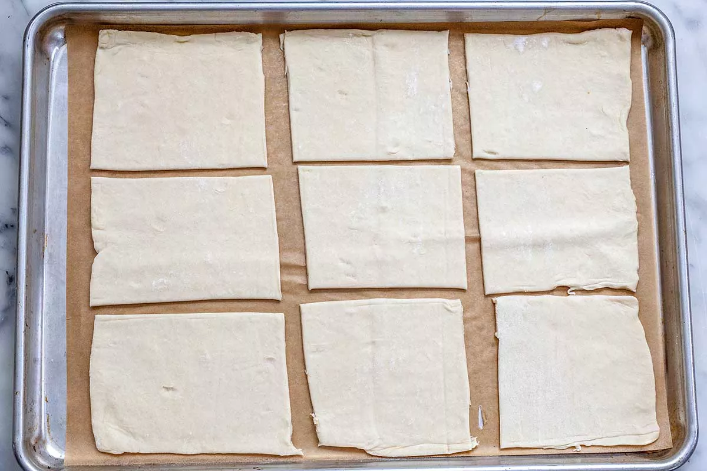
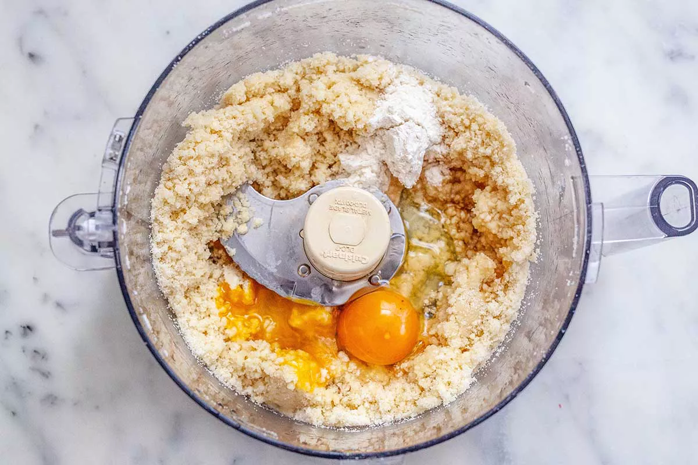
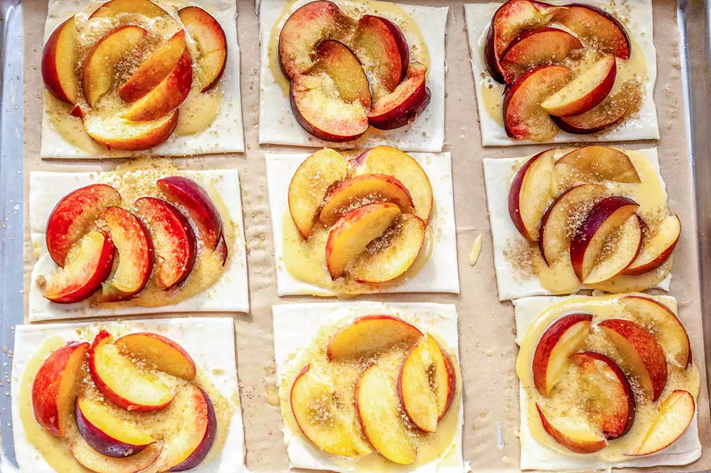

Ingredients:
-1 9-inch pie shell (see pie crust recipe for homemade version)
-1/2 cup chopped yellow or red onion (about 1/3 onion, diced)
-3-4 tomatoes, cut in half horizontally, squeezed to remove excess juice, roughly chopped, to yield approximately 3 cups (700 ml) chopped tomatoes
-1/2 teaspoon kosher salt
-1/4 cup sliced basil (about 8 large leaves)*
-21/2 cup (120 ml) mayonnaise
-1 teaspoon (or more to taste) of Frank's Hot Sauce (or Tabasco)
Method:
1-Preheat the oven: Line a baking sheet with parchment and preheat the oven to 375oF.
2-Prepare the dough: On a lightly floured work surface, unfold the puff pastry. Lightly roll it with a rolling pin to even it out if there are any gaps or wrinkles. Transfer the dough to the parchment-lined baking sheet.
With a pizza cutter or knife, cut the dough into 9 pieces to make four-inch squares or similar size rectangles. The exact size depends upon the original shape of the dough. Spread them apart on the baking sheet. Refrigerate while you make the filling.

3-Make the frangipane: In a food processor fitted with the metal blade, pulse the almond flour, sugar, and salt for a few seconds to mix. Add the butter pieces and pulse until the butter is incorporated with no large visible pieces.
Add the egg, all-purpose flour, amaretto (or almond extract), and vanilla and process until the frangipane is smooth. It should have the consistency of natural almond butter, thick but runny.

4-Assemble the tarts: On each square of pastry, spoon about 1 tablespoon of the frangipane. It will spread out naturally on the pastry, and even further once you add peaches. If some spills over the edges that’s fine. If your frangipane doesn’t spread, feel free to push it around the tart with the back of your spoon. You may have some frangipane left over, depending on the size of your pastry squares.
Set 5 to 6 wedges of fruit on top of each tart—no need to be too fussy about their arrangement. Sprinkle each with the turbinado sugar.

5-Bake the tarts: Bake for 35 to 40 minutes, or until the peaches are soft and the frangipane and pastry are golden.
6-Glaze the tarts: In a small microwave-safe bowl, heat the jelly or jam and water for 30 seconds, or until liquefied. Brush the warm glaze over the peaches. Serve the tarts on the same day that they are made.